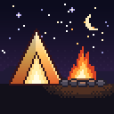
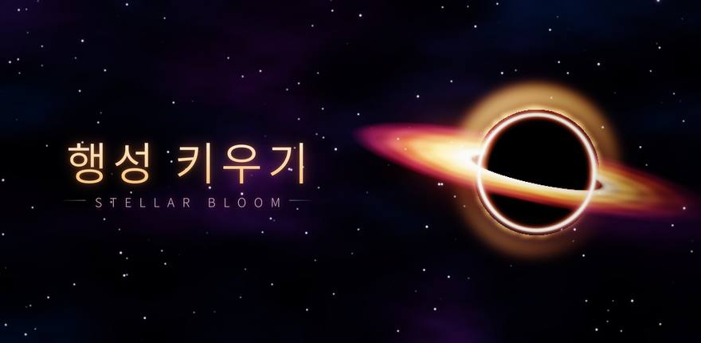

Starlit CampStellar Bloom
Android · PróximamenteBuscamos testersPrueba cerradaYa en Google Play

Una mota de polvo en una nebulosa. Atrae la materia que te rodea y conviértete en planeta, en estrella, en agujero negro y, por fin, en galaxia.


Características
- Evoluciona a través de 24 cuerpos celestesProtoplanetas, supertierras, enanas marrones, supergigantes rojas, magnetares, agujeros negros supermasivos y galaxias elípticas. Cada etapa crece del Nv. 1 al Nv. 5.
- Algo se acerca. Dale la vuelta.Al final de cada partida, algo surge de las profundidades. Supéralo en tamaño antes de que llegue y te lo tragarás tú; la partida sigue en prórroga con algo aún más grande en camino.
- Más allá del horizonte de sucesos: FASE 2Cuando te conviertes por primera vez en agujero negro, la pantalla se rasga y empieza la FASE 2. La voz del observador y 12 diarios de observación revelan la historia oculta.
- Lo que absorbes decide tu destinoTu evolución se ramifica según hayas absorbido sobre todo hielo, gas o elementos pesados.
- Gravedad vivaLos cuerpos que flotan también se atraen entre sí y, cuando dos chocan, el mayor absorbe al menor.
- Astronomía de verdadCada nuevo cuerpo que descubres añade a tu enciclopedia una breve entrada basada en la ciencia real.
Únete a la prueba cerrada
Stellar Bloom está en prueba cerrada en Google Play. Cualquiera puede unirse en cuatro pasos:
- Únete al grupo de testersInicia sesión con la cuenta de Google que usas en Play Store, abre el grupo de Google Starlit Camp Testers y pulsa Unirse al grupo.
- Apúntate a la pruebaAbre el enlace de la prueba y pulsa Convertirse en tester. Justo después de unirte al grupo, puede tardar unos minutos en activarse.
- Instala desde Google PlayCuando te hayas apuntado, instala el juego desde su página de Google Play. También puedes buscarlo en la app Play Store de tu móvil.
- Consérvalo 14 días y envíanos tu opiniónPara poder publicar el juego, los testers deben mantener la app instalada al menos 14 días. Juega de vez en cuando y envíanos errores o ideas por correo o mediante los comentarios privados de Play Store. Nos ayuda muchísimo.
※ Solo para Android. Usa la misma cuenta de Google para unirte al grupo, apuntarte a la prueba e instalar el juego. El contenido y el equilibrio pueden cambiar durante la prueba.
Buscamos testers
Estamos preparando una prueba cerrada de Stellar Bloom antes del lanzamiento. Únete ya al grupo de testers y podrás participar en cuanto se abra la prueba.
- Únete al grupo de testersInicia sesión con la cuenta de Google que usas en Play Store, abre el grupo de Google Starlit Camp Testers y pulsa Unirse al grupo.
- Espera a que se abra la pruebaCuando se abra, el enlace de la prueba y los pasos de instalación aparecerán en esta página, y también lo anunciaremos en el grupo.
- Consérvalo 14 días y envíanos tu opiniónCuando se abra, instala el juego, consérvalo al menos 14 días, juega y cuéntanos qué te parece.
※ Solo para Android. Únete con la cuenta de Google que usas en Play Store.
Juega ahora
Stellar Bloom es gratis en Google Play.
¡Gracias a todas las personas que participaron en la prueba cerrada!
Próximamente
Estamos preparando el lanzamiento de Stellar Bloom. Publicaremos las novedades en esta página.
Soporte
※ El orden de evolución del juego es una versión simplificada de cómo se forman los objetos celestes reales. El juego es gratuito e incluye anuncios y compras integradas.